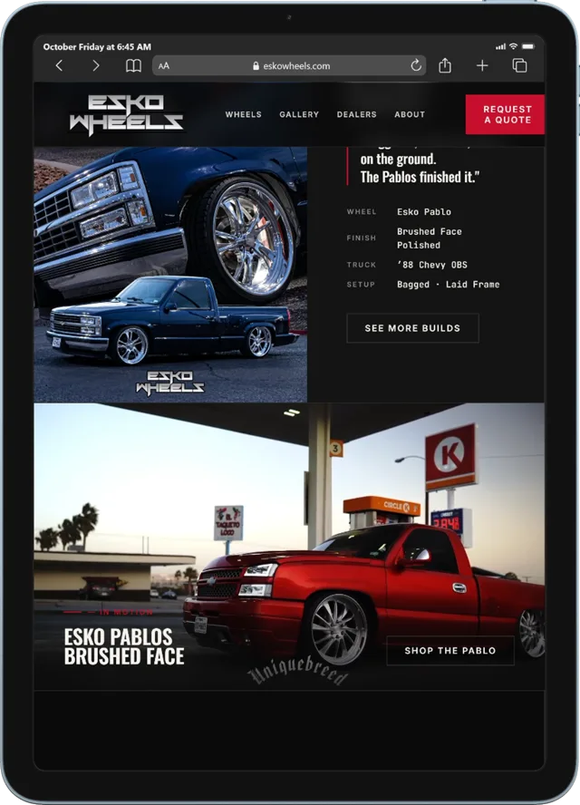
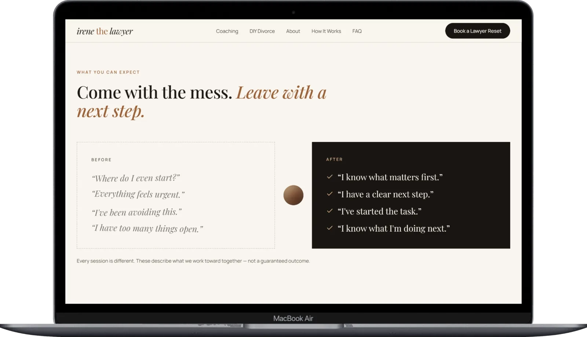
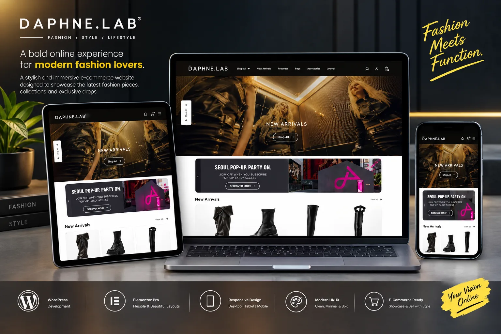
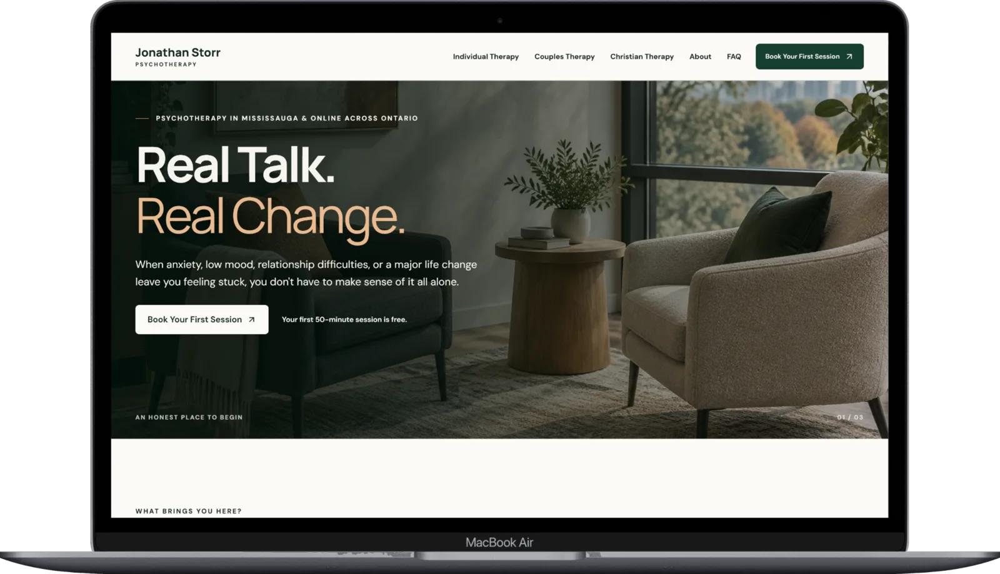

Automotive · E-commerce website
I design and build professional websites for businesses that want to look credible, work beautifully on every screen and guide visitors toward the next step. Over 6 years, 30+ websites, one clear process.
Design, development and WordPress build — handled by one specialist.

Selected work / ESKO Wheels
A look at websites designed to communicate clearly, load quickly and make the next step obvious.




From the first layout decision to the final WordPress build, every part of the site is handled with the same attention to detail.
Business and corporate websites designed around your brand, your audience and the action you want visitors to take.
Custom page design and development in Elementor and Elementor Pro, so your site stays easy to edit after launch.
Focused pages built around one offer and one clear next step, with structure and content that support conversion.
Online stores with well-structured product pages, clear shopping journeys and the essential store functionality you need.
Outdated or inconsistent sites rebuilt as modern, responsive experiences with clearer structure and stronger visual hierarchy.
Improvements to layout, navigation, responsiveness, performance and user experience across an existing WordPress site.
The details below are the ones that make the difference between a site that simply exists and one that supports the business behind it.
Every layout, headline and call to action is chosen with your goal in mind: enquiries, sales or bookings.
Visitors see what matters first, then move naturally through the page instead of guessing where to look.
Layouts are designed for small screens first, then refined for tablet and desktop so nothing feels squeezed in.
Built with maintainable structure and the right tools, so updates do not become a developer dependency.
Optimised images, sensible sections and lightweight interactions keep the site fast and easy to use.
You see progress at clear milestones and know what happens next at every stage of the project.
A simple, transparent workflow so you always know what is happening and what comes next.
We clarify the business, audience, goals and pages required.
I define the structure, content needs and the journey visitors will follow.
Visual direction and page layouts are developed for your review.
The approved design is built in WordPress using the right tools for the site.
Responsiveness, functionality and usability are checked before launch.
Final review, handover and a walkthrough of your new site.
I’m Ademola Habeeb, a website designer and WordPress developer with over 6 years of experience and more than 30 websites delivered. I work with businesses of different sizes and industries, both locally and internationally, on websites that are clear, reliable and built to support growth.
More about me
Tell me what you’re building and where your current website is falling short. Share your brief and I’ll respond with a relevant next step.